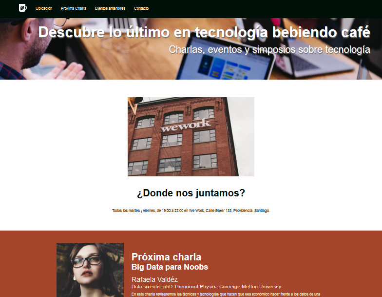
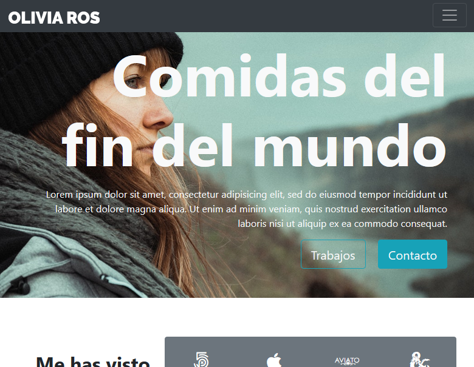

MIS ÚLTIMOS TRABAJOS



En corto ...: Nacido en Valparaiso en 1968, durante mi niñez vivi en varias ciudades de Chile; Santiago, Los Ángeles, Temuco, Arica, Iquique y nuevamente Santiago. Esta experiencia de muchos traslados te permite conocer distintos climas, lugares, personas y costumbres, pero tiene la desventaja de no poder mantener relaciones por largo tiempo.
PD: Por favor, claramente la imagen de arriba es ... simbólica, referencial, imaginativa ... Nada como para amarrarse demasiado; estamos?
De todas maneras, un aspecto común a las actividades que he desarrollado (que ya comentaré) es la investigación. Ese gusto por capturar lo desconocido y convertirlo conocido. Y no en pocas ocasiones el proceso de búsqueda es más que satisfactorio, aún por sobre el éxito o fracaso de la expedición en su total.
Como sea, puedo comentar que, a grandes rasgos, mi experiencia de trabajo ha pasado por la investigación científica, el soporte computacional y actualmente el desarrollo de aplicaciones. A primera vista (salvo las dos últimas) no hay elementos en común entre estas actividades. Y es algo que se podría discutir hasta el infinito (y más allá), lo cual no es la idea del presente contexto. Solo mencionar que en todas ellas la búsqueda de soluciones, de caminos de cómo hacer las cosas, de capturar el mecanismo detrás de los fenómenos observados ha sido siempre el motor de motivación para el trabajo.
En resumen, en el área de investigación trabajé en ciencia básica; en el primer laboratorio el modelo biológico era una etapa en el desarrollo del molusco Concholepas concholepas (loco) y en un segundo trabajo el tema se relacionaba con el metabolismo de lípidos y sus diferencias entre roedores y humanos.
En lo referente a soporte computacional, abordé temas de equipos personales (armado, reparación, instalación de software y mantenimiento general), montaje y mantención de redes y administración de servidores. Tuve la oportunidad de formar parte del equipo de informática de una empresa que contaba con aproximadamente 150 usuarios, bastante pega; pero fue donde di mis primeros pasos hacia programación y bases de datos.
Por fin, desarrollo de aplicaciones! Existen muchas maneras de abordar el mundo de la programación, como así de resolver un problema con un algoritmo propio. En mi caso, inicié con bases de datos, MySql para ser preciso. Y no me arrepiento, puedo decir que en mi formación lo más importante es la información, es el fin y el porqué del desarrollo de aplicaciones. Respecto a lenguajes de programación, he tenido experiencia con Visual Basic (BV6) y Java (Swing y Android).
Actualmente estoy interesado en el manejo de herramientas para el desarrollo de aplicaciones web.